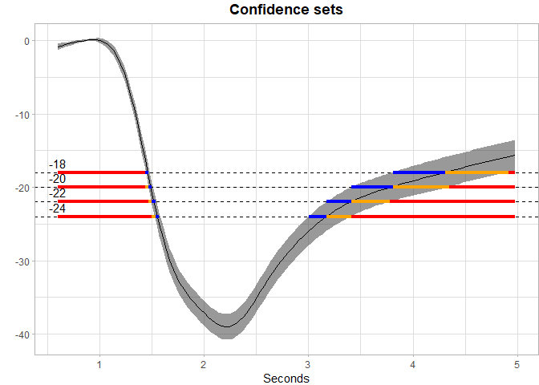

What it does
The identification of domain sets whose outcomes belong to predefined subsets can address fundamental risk assessment challenges in climatology and medicine. A motivating example involves estimating geographical regions where average difference between summer and winter temperatures exceed a certain benchmark, which help policymakers focus on specific areas that are at higher risk for effects of climate change.
Therefore, a statistical framework is needed for estimating the set in the domain of a function whose image equals a predefined subset, which can be defined as , with a pre-specified subset of a real line (e.g., [c, ∞)). Proposed by Sommerfeld et al. (2018), Coverage Probability Excursion (CoPE) sets, defined as: CSin(U) ⊆ μ−1(U) ⊆ CSout(U) are used to assess the spatial uncertainty of the inverse set estimation.
Ren et al. (2023) generalized the estimation to dense and non-dense domains, and developed a fast and reliable construction method of confidence region for inverse sets over arbitrary chosen thresholds simultaneously. Based on Ren’s approach, this package provides useful statistical tools for both the estimation of the inverse set and the corresponding simultaneous outer and inner confidence region. Acceptable forms of input includes both 1D and 2D data for linear regression, logistic regression, functional regression and spatial generalized least square regression. Useful functions are also provided for constructing simultaneous confidence bands (SCB) for these models. More details can be found below.
Installation
To install from CRAN, please use:
# install.packages("SCoRES")To install the latest version directly from Github, please use:
install.packages("devtools")
devtools::install_github("AngelaYuStat/SCoRES")How to use it
The example here is to use pupil functional data to construct the simultaneous outer and inner confidence region from simultaneous confidence bands (SCB) using Function-on-Scalar Regression (FoSR).
The pupil dataset contains repeated measures of percent change over time for multiple subjects under two user categories (use: 1 and no use: 0). It contains both user and non-user groups, multiple time points, and several covariates, including age, gender, BMI, and alcohol consumption.
Note that mgcv is only required for fitting the GAMM-FPCA model and is otherwise unnecessary for the package. GAMM-FPCA (Generalized Additive Mixed Model Functional Principal Component Analysis) is a method for modeling functional data with both smooth effects and random variation. More details about this model can be found in Methods vignette.
Before calculating the SCBs, we first process pupil data by fitting a mean GAM model, extracting residuals and performing FPCA using SCoRES::prepare_pupil_fpca(), a function specifically designed for modeling pupil data. The function will return an enhanced dataset includes the FPCA-derived basis scores (Phi1, Phi2, Phi3, Phi4) for Function-on-Scalar Regression (FoSR) analysis.
Following the FPCA-based data augmentation, we fit a FoSR model using mgcv::bam(), which allows efficient estimation of Generalized Additive Mixed Models (GAMMs). The model formula is designed to capture both population-level smooth trends and subject-specific functional variation.
The function-on-scalar regression model is
pupil_fpca <- SCoRES::prepare_pupil_fpca(pupil)
fosr_mod <- mgcv::bam(percent_change ~ s(seconds, k=30, bs="cr") +
s(seconds, by = use, k=30, bs = "cr") +
s(seconds, by = age, k = 30, bs = "cr") +
s(seconds, by = gender, k = 30, bs = "cr") +
s(id, by = Phi1, bs="re") +
s(id, by = Phi2, bs="re") +
s(id, by = Phi3, bs="re") +
s(id, by = Phi4, bs="re"),
method = "fREML", data = pupil_fpca, discrete = TRUE)After obtaining the FoSR object fosr_mod, simultaneous confidence bands (SCB) can be constructed though SCoRES::SCB_functional_outcome using pre-specified methods. The SCoRES package provides two options for calculating the simultaneous confidence bands (SCB). Use method to specify. Use groups to specify the names of grouping variables to analyze. The input data should have numerical binary 0/1 values for all scalar group variables. Here, we analyze the user group by specifying groups = "use". Use fitted to specify the object for SCB estimation. If fitted = TRUE, SCoRES::SCB_functional_outcome will construct the SCB for the fitted mean outcome function. If fitted = FALSE,
Here, we estimated SCBs using both options seperately for the mean outcome Y(t) of user’s group: where:
- is a functional outcome (percent_change)
- is a scalar covariate (use)
# CMA approach
results_pupil_cma <- SCoRES::SCB_functional_outcome(
data_df = pupil,
object = fosr_mod,
method = "cma",
fitted = TRUE,
est_mean = TRUE,
alpha = 0.05,
outcome = "percent_change",
domain = "seconds",
subset = c("use = 1"),
id = "id")The code below visualizes the simultaneous outer and inner confidence region derived from SCB results using the SCoRES::plot_cs() function. The results object is first converted to a tibble for easier manipulation.
The levels = c(-18, -20, -22, -24) argument specifies a set of thresholds, and SCoRES::plot_cs() function estimates multiple inverse upper excursion sets corresponding to these thresholds, and plot the estimated inverse region, the inner confidence region, and the outer confidence region.
results_pupil_cma <- tibble::as_tibble(results_pupil_cma)
plot_cs(results_pupil_cma,
levels = c(-18, -20, -22, -24),
x = results_pupil_cma$time,
mu_hat = results_pupil_cma$yhat,
xlab = "Seconds",
ylab = "Percent_Outcome",
level_label = T,
min.size = 40,
palette = "Spectral",
color_level_label = "black")
The plot demonstrate how to use SCB to find regions of s where the estimated mean is greater than or equal to the four levels -18, -20, -22 and -24 for pupil data. The gray shaded area is the 95% SCB, the solid black line is the estimated mean. The red horizontal line shows the inner confidence region (where the lower SCB is greater than the corresponding level) that are contained in the estimated inverse region represented by the union of the yellow and red horizontal line (where the estimated mean is greater than the corresponding levels); the outer confidence region are the union of the blue, yellow and red line (where the upper SCB is greater than the corresponding levels) and contain both the estimated inverse region and the inner confidence region.